Last updated: 2021-10-20
Checks: 5 2
Knit directory: Vaccination_COVID/
This reproducible R Markdown analysis was created with workflowr (version 1.6.2). The Checks tab describes the reproducibility checks that were applied when the results were created. The Past versions tab lists the development history.
The R Markdown is untracked by Git. To know which version of the R Markdown file created these results, you’ll want to first commit it to the Git repo. If you’re still working on the analysis, you can ignore this warning. When you’re finished, you can run wflow_publish to commit the R Markdown file and build the HTML.
Great job! The global environment was empty. Objects defined in the global environment can affect the analysis in your R Markdown file in unknown ways. For reproduciblity it’s best to always run the code in an empty environment.
The command set.seed(20210126) was run prior to running the code in the R Markdown file. Setting a seed ensures that any results that rely on randomness, e.g. subsampling or permutations, are reproducible.
Great job! Recording the operating system, R version, and package versions is critical for reproducibility.
To ensure reproducibility of the results, delete the cache directory 04_merge_measle_cache and re-run the analysis. To have workflowr automatically delete the cache directory prior to building the file, set delete_cache = TRUE when running wflow_build() or wflow_publish().
Great job! Using relative paths to the files within your workflowr project makes it easier to run your code on other machines.
Great! You are using Git for version control. Tracking code development and connecting the code version to the results is critical for reproducibility.
The results in this page were generated with repository version 30f1b6c. See the Past versions tab to see a history of the changes made to the R Markdown and HTML files.
Note that you need to be careful to ensure that all relevant files for the analysis have been committed to Git prior to generating the results (you can use wflow_publish or wflow_git_commit). workflowr only checks the R Markdown file, but you know if there are other scripts or data files that it depends on. Below is the status of the Git repository when the results were generated:
Ignored files:
Ignored: .RData
Ignored: .Rhistory
Ignored: .Rproj.user/
Ignored: analysis/04_merge_measle_cache/
Untracked files:
Untracked: analysis/04_merge_measle.Rmd
Untracked: figures/child_all_month_year.png
Untracked: figures/child_all_month_year2.png
Untracked: figures/child_all_province_year.png
Untracked: figures/measle_all_delay_age.png
Untracked: figures/measle_all_delay_period.png
Untracked: figures/measle_all_delay_province.png
Untracked: figures/measle_all_delay_type.png
Untracked: figures/measle_all_delay_year.png
Untracked: figures/measle_all_month_year.png
Untracked: figures/measle_all_month_year2.png
Note that any generated files, e.g. HTML, png, CSS, etc., are not included in this status report because it is ok for generated content to have uncommitted changes.
There are no past versions. Publish this analysis with wflow_publish() to start tracking its development.
knitr::opts_chunk$set(echo = FALSE, warning = FALSE, message = FALSE, cache.lazy = FALSE,
tidy.opts=list(width.cutoff=60),
tidy=TRUE)
library(workflowr)This is workflowr version 1.6.2
Run ?workflowr for help getting startedlibrary(data.table)
library(tidyverse)── Attaching packages ─────────────────────────────────────── tidyverse 1.3.0 ──✓ ggplot2 3.3.3 ✓ purrr 0.3.4
✓ tibble 3.1.0 ✓ dplyr 1.0.5
✓ tidyr 1.1.3 ✓ stringr 1.4.0
✓ readr 1.4.0 ✓ forcats 0.5.1── Conflicts ────────────────────────────────────────── tidyverse_conflicts() ──
x dplyr::between() masks data.table::between()
x dplyr::filter() masks stats::filter()
x dplyr::first() masks data.table::first()
x dplyr::lag() masks stats::lag()
x dplyr::last() masks data.table::last()
x purrr::transpose() masks data.table::transpose()library(lubridate)
Attaching package: 'lubridate'The following objects are masked from 'package:data.table':
hour, isoweek, mday, minute, month, quarter, second, wday, week,
yday, yearThe following objects are masked from 'package:base':
date, intersect, setdiff, unionlibrary(ggplot2)
library(gt)
library(gtsummary)
library(ggridges)| Characteristic | N = 8,727,3571 |
|---|---|
| province | |
| An Giang | 33,741 (0.4%) |
| Ba Ria - Vung Tau | 60,256 (0.7%) |
| Bac Giang | 253,461 (2.9%) |
| Bac Kan | 28,856 (0.3%) |
| Bac Lieu | 18,623 (0.2%) |
| Bac Ninh | 212,879 (2.4%) |
| Ben Tre | 37,383 (0.4%) |
| Binh Dinh | 53,997 (0.6%) |
| Binh Duong | 154,315 (1.8%) |
| Binh Phuoc | 43,989 (0.5%) |
| Binh Thuan | 33,832 (0.4%) |
| Ca Mau | 12,740 (0.1%) |
| Can Tho | 52,018 (0.6%) |
| Cao Bang | 47,200 (0.5%) |
| Da Nang | 78,846 (0.9%) |
| Dak Lak | 92,554 (1.1%) |
| Dak Nong | 21,019 (0.2%) |
| Dien Bien | 65,264 (0.7%) |
| Dong Nai | 200,967 (2.3%) |
| Dong Thap | 36,976 (0.4%) |
| Gia Lai | 20,551 (0.2%) |
| Ha Giang | 87,763 (1.0%) |
| Ha Nam | 105,721 (1.2%) |
| Ha Noi | 1,793,483 (21%) |
| Ha Tinh | 165,714 (1.9%) |
| Hai Duong | 284,535 (3.3%) |
| Hai Phong | 306,214 (3.5%) |
| Hau Giang | 13,779 (0.2%) |
| Hoa Binh | 90,388 (1.0%) |
| Hung Yen | 182,936 (2.1%) |
| Khanh Hoa | 54,602 (0.6%) |
| Kien Giang | 25,385 (0.3%) |
| Kon Tum | 12,295 (0.1%) |
| Lai Chau | 47,302 (0.5%) |
| Lam Dong | 43,507 (0.5%) |
| Lang Son | 79,835 (0.9%) |
| Lao Cai | 82,251 (0.9%) |
| Long An | 63,350 (0.7%) |
| Nam Dinh | 273,105 (3.1%) |
| Nghe An | 455,941 (5.2%) |
| Ninh Binh | 128,043 (1.5%) |
| Ninh Thuan | 20,477 (0.2%) |
| Phu Tho | 196,430 (2.3%) |
| Phu Yen | 19,393 (0.2%) |
| Quang Binh | 17,193 (0.2%) |
| Quang Nam | 56,968 (0.7%) |
| Quang Ngai | 47,930 (0.5%) |
| Quang Ninh | 184,402 (2.1%) |
| Quang Tri | 15,890 (0.2%) |
| Soc Trang | 24,516 (0.3%) |
| Son La | 113,750 (1.3%) |
| Tay Ninh | 38,891 (0.4%) |
| Thai Binh | 205,053 (2.3%) |
| Thai Nguyen | 151,694 (1.7%) |
| Thanh Hoa | 467,568 (5.4%) |
| Thanh pho Ho Chi Minh | 821,425 (9.4%) |
| Thua Thien Hue | 45,881 (0.5%) |
| Tien Giang | 52,579 (0.6%) |
| Tra Vinh | 18,514 (0.2%) |
| Tuyen Quang | 79,211 (0.9%) |
| Vinh Long | 28,801 (0.3%) |
| Vinh Phuc | 182,155 (2.1%) |
| Yen Bai | 83,020 (1.0%) |
| sex | |
| F | 4,622,994 (53%) |
| M | 4,104,363 (47%) |
| age | |
| 1 | 1,407,263 (16%) |
| 2 | 2,439,800 (28%) |
| 3 | 2,599,612 (30%) |
| 4 | 2,280,682 (26%) |
| type | |
| both | 4,034,934 (46%) |
| public | 2,210,096 (25%) |
| private | 2,482,327 (28%) |
| type2 | |
| private | 4,499,794 (52%) |
| public | 4,227,563 (48%) |
| V6 | |
| 2017 | 2,280,682 (26%) |
| 2018 | 2,599,612 (30%) |
| 2019 | 2,439,800 (28%) |
| 2020 | 1,407,263 (16%) |
|
1
n (%)
|
|
| Variable | N | both, N = 4,034,9341 | public, N = 2,210,0961 | private, N = 2,482,3271 |
|---|---|---|---|---|
| age | 8,727,357 | |||
| 1 | 592,605 (42%) | 506,363 (36%) | 308,295 (22%) | |
| 2 | 1,246,130 (51%) | 508,069 (21%) | 685,601 (28%) | |
| 3 | 1,265,434 (49%) | 522,437 (20%) | 811,741 (31%) | |
| 4 | 930,765 (41%) | 673,227 (30%) | 676,690 (30%) | |
| sex | 8,727,357 | |||
| F | 2,179,985 (47%) | 1,142,067 (25%) | 1,300,942 (28%) | |
| M | 1,854,949 (45%) | 1,068,029 (26%) | 1,181,385 (29%) | |
| province | 8,727,357 | |||
| An Giang | 2 (<0.1%) | 0 (0%) | 33,739 (100%) | |
| Ba Ria - Vung Tau | 87 (0.1%) | 0 (0%) | 60,169 (100%) | |
| Bac Giang | 107,640 (42%) | 136,356 (54%) | 9,465 (3.7%) | |
| Bac Kan | 7,971 (28%) | 20,317 (70%) | 568 (2.0%) | |
| Bac Lieu | 3 (<0.1%) | 0 (0%) | 18,620 (100%) | |
| Bac Ninh | 164,417 (77%) | 47,153 (22%) | 1,309 (0.6%) | |
| Ben Tre | 1 (<0.1%) | 0 (0%) | 37,382 (100%) | |
| Binh Dinh | 7 (<0.1%) | 0 (0%) | 53,990 (100%) | |
| Binh Duong | 155 (0.1%) | 0 (0%) | 154,160 (100%) | |
| Binh Phuoc | 7 (<0.1%) | 0 (0%) | 43,982 (100%) | |
| Binh Thuan | 4 (<0.1%) | 0 (0%) | 33,828 (100%) | |
| Ca Mau | 2 (<0.1%) | 0 (0%) | 12,738 (100%) | |
| Can Tho | 10 (<0.1%) | 0 (0%) | 52,008 (100%) | |
| Cao Bang | 13,026 (28%) | 33,898 (72%) | 276 (0.6%) | |
| Da Nang | 34 (<0.1%) | 0 (0%) | 78,812 (100%) | |
| Dak Lak | 10 (<0.1%) | 0 (0%) | 92,544 (100%) | |
| Dak Nong | 6 (<0.1%) | 0 (0%) | 21,013 (100%) | |
| Dien Bien | 13,088 (20%) | 51,937 (80%) | 239 (0.4%) | |
| Dong Nai | 82 (<0.1%) | 0 (0%) | 200,885 (100%) | |
| Dong Thap | 3 (<0.1%) | 0 (0%) | 36,973 (100%) | |
| Gia Lai | 5 (<0.1%) | 0 (0%) | 20,546 (100%) | |
| Ha Giang | 12,174 (14%) | 75,172 (86%) | 417 (0.5%) | |
| Ha Nam | 58,924 (56%) | 45,677 (43%) | 1,120 (1.1%) | |
| Ha Noi | 1,615,561 (90%) | 148,962 (8.3%) | 28,960 (1.6%) | |
| Ha Tinh | 73,366 (44%) | 89,744 (54%) | 2,604 (1.6%) | |
| Hai Duong | 208,679 (73%) | 71,058 (25%) | 4,798 (1.7%) | |
| Hai Phong | 194,297 (63%) | 95,367 (31%) | 16,550 (5.4%) | |
| Hau Giang | 10 (<0.1%) | 0 (0%) | 13,769 (100%) | |
| Hoa Binh | 35,540 (39%) | 52,969 (59%) | 1,879 (2.1%) | |
| Hung Yen | 127,860 (70%) | 53,144 (29%) | 1,932 (1.1%) | |
| Khanh Hoa | 11 (<0.1%) | 0 (0%) | 54,591 (100%) | |
| Kien Giang | 5 (<0.1%) | 0 (0%) | 25,380 (100%) | |
| Kon Tum | 4 (<0.1%) | 0 (0%) | 12,291 (100%) | |
| Lai Chau | 6,722 (14%) | 40,304 (85%) | 276 (0.6%) | |
| Lam Dong | 6 (<0.1%) | 0 (0%) | 43,501 (100%) | |
| Lang Son | 27,098 (34%) | 51,789 (65%) | 948 (1.2%) | |
| Lao Cai | 20,170 (25%) | 59,891 (73%) | 2,190 (2.7%) | |
| Long An | 11 (<0.1%) | 0 (0%) | 63,339 (100%) | |
| Nam Dinh | 192,530 (70%) | 78,085 (29%) | 2,490 (0.9%) | |
| Nghe An | 201,856 (44%) | 240,572 (53%) | 13,513 (3.0%) | |
| Ninh Binh | 58,501 (46%) | 66,888 (52%) | 2,654 (2.1%) | |
| Ninh Thuan | 1 (<0.1%) | 0 (0%) | 20,476 (100%) | |
| Phu Tho | 140,953 (72%) | 54,761 (28%) | 716 (0.4%) | |
| Phu Yen | 1 (<0.1%) | 0 (0%) | 19,392 (100%) | |
| Quang Binh | 10 (<0.1%) | 0 (0%) | 17,183 (100%) | |
| Quang Nam | 3 (<0.1%) | 0 (0%) | 56,965 (100%) | |
| Quang Ngai | 3 (<0.1%) | 0 (0%) | 47,927 (100%) | |
| Quang Ninh | 130,239 (71%) | 53,295 (29%) | 868 (0.5%) | |
| Quang Tri | 3 (<0.1%) | 0 (0%) | 15,887 (100%) | |
| Soc Trang | 1 (<0.1%) | 0 (0%) | 24,515 (100%) | |
| Son La | 20,818 (18%) | 92,558 (81%) | 374 (0.3%) | |
| Tay Ninh | 8 (<0.1%) | 0 (0%) | 38,883 (100%) | |
| Thai Binh | 100,816 (49%) | 97,811 (48%) | 6,426 (3.1%) | |
| Thai Nguyen | 82,303 (54%) | 67,310 (44%) | 2,081 (1.4%) | |
| Thanh Hoa | 248,191 (53%) | 215,712 (46%) | 3,665 (0.8%) | |
| Thanh pho Ho Chi Minh | 377 (<0.1%) | 0 (0%) | 821,048 (100%) | |
| Thua Thien Hue | 7 (<0.1%) | 0 (0%) | 45,874 (100%) | |
| Tien Giang | 2 (<0.1%) | 0 (0%) | 52,577 (100%) | |
| Tra Vinh | 8 (<0.1%) | 0 (0%) | 18,506 (100%) | |
| Tuyen Quang | 18,893 (24%) | 59,190 (75%) | 1,128 (1.4%) | |
| Vinh Long | 2 (<0.1%) | 0 (0%) | 28,799 (100%) | |
| Vinh Phuc | 126,002 (69%) | 53,960 (30%) | 2,193 (1.2%) | |
| Yen Bai | 26,408 (32%) | 56,216 (68%) | 396 (0.5%) | |
| type2 | 8,727,357 | |||
| private | 2,017,467 (45%) | 0 (0%) | 2,482,327 (55%) | |
| public | 2,017,467 (48%) | 2,210,096 (52%) | 0 (0%) | |
|
1
n (%)
|
||||
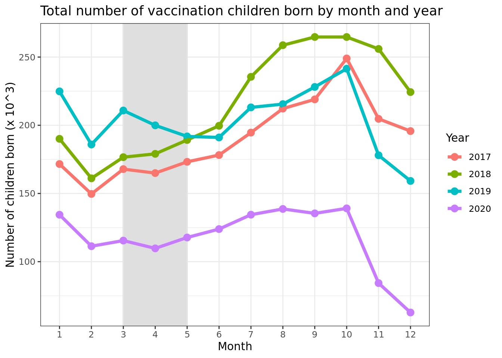
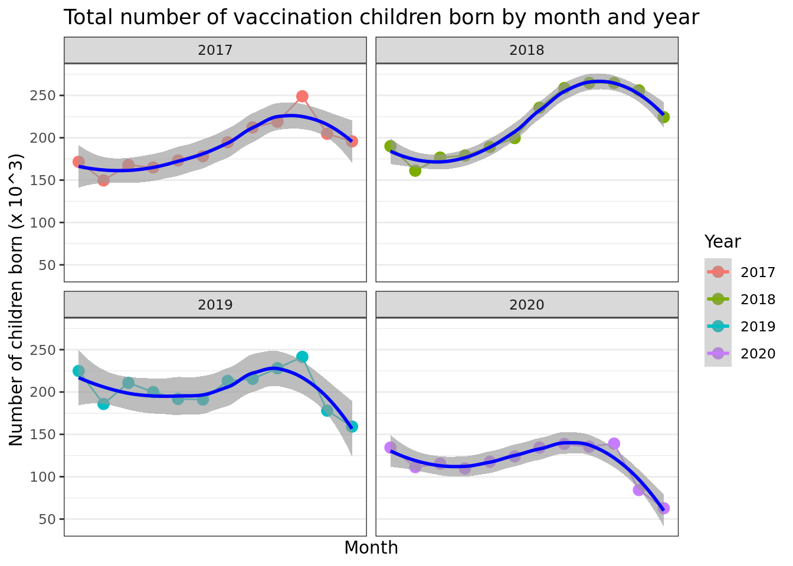
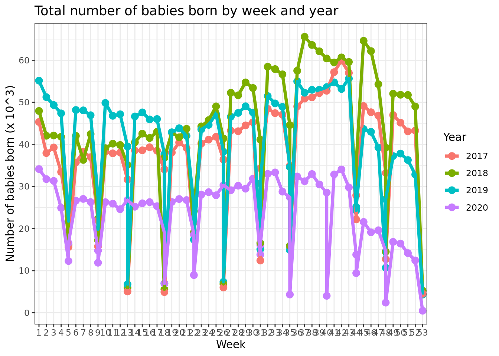
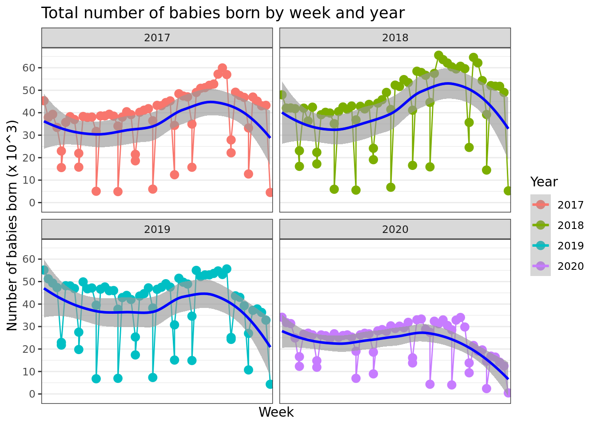
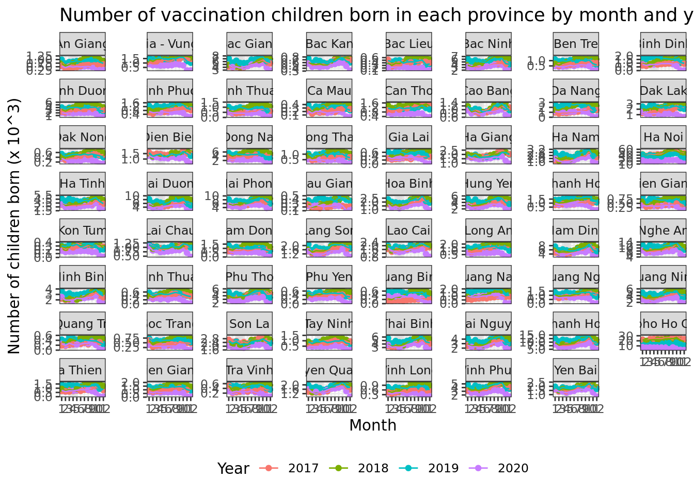
pid vacname2 province district commune sex
1: 101010119700003 Measle_Mumps_Rubella Ha Noi Ba Dinh Phuc Xa 1
2: 101010119720006 Measle_Mumps_Rubella Ha Noi Ba Dinh Phuc Xa 1
3: 101010119730013 Measle_Mumps_Rubella Ha Noi Ba Dinh Phuc Xa 1
4: 101010119740006 Measle_Mumps_Rubella Ha Noi Ba Dinh Phuc Xa 1
5: 101010119740011 Measle_Mumps_Rubella Ha Noi Ba Dinh Phuc Xa 0
6: 101010119760008 Measle_Mumps_Rubella Ha Noi Ba Dinh Phuc Xa 1
dob vacname2 vacdate shot year month week start vyear
1: 1970-12-26 Measle_Mumps_Rubella 2018-01-22 1 1970 12 52 NA 2018
2: 1972-05-28 Measle_Mumps_Rubella 2019-05-08 1 1972 5 22 NA 2019
3: 1973-12-13 Measle_Mumps_Rubella 2019-11-19 1 1973 12 50 NA 2019
4: 1974-04-08 Measle_Mumps_Rubella 2018-11-28 1 1974 4 14 NA 2018
5: 1974-07-05 Measle_Mumps_Rubella 2019-10-03 1 1974 7 27 NA 2019
6: 1976-03-05 Measle_Mumps_Rubella 2019-05-30 1 1976 3 10 NA 2019
vmonth vweek vagem vagem2 vdelay vsche vsyear vsmonth vsweek vdelayd
1: 1 4 564 564.8953 NA <NA> NA NA NA <NA>
2: 5 19 563 563.3183 NA <NA> NA NA NA <NA>
3: 11 47 551 551.1951 NA <NA> NA NA NA <NA>
4: 11 48 535 535.6879 NA <NA> NA NA NA <NA>
5: 10 40 542 542.9487 NA <NA> NA NA NA <NA>
6: 5 22 518 518.8008 NA <NA> NA NA NA <NA>
type type2
1: private private
2: private private
3: private private
4: private private
5: private private
6: private private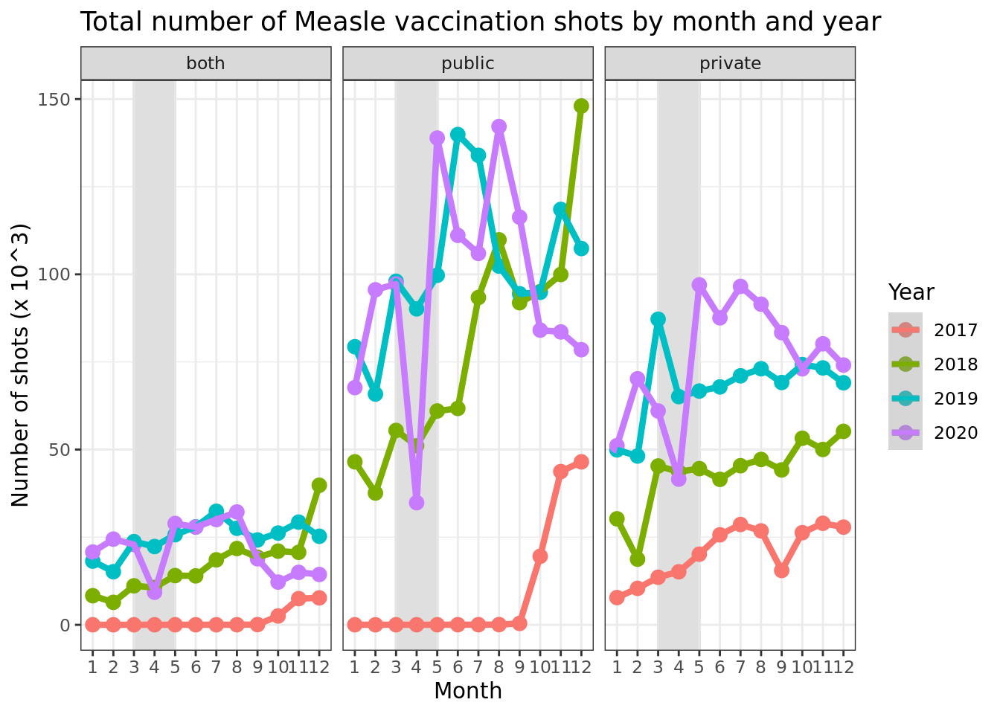
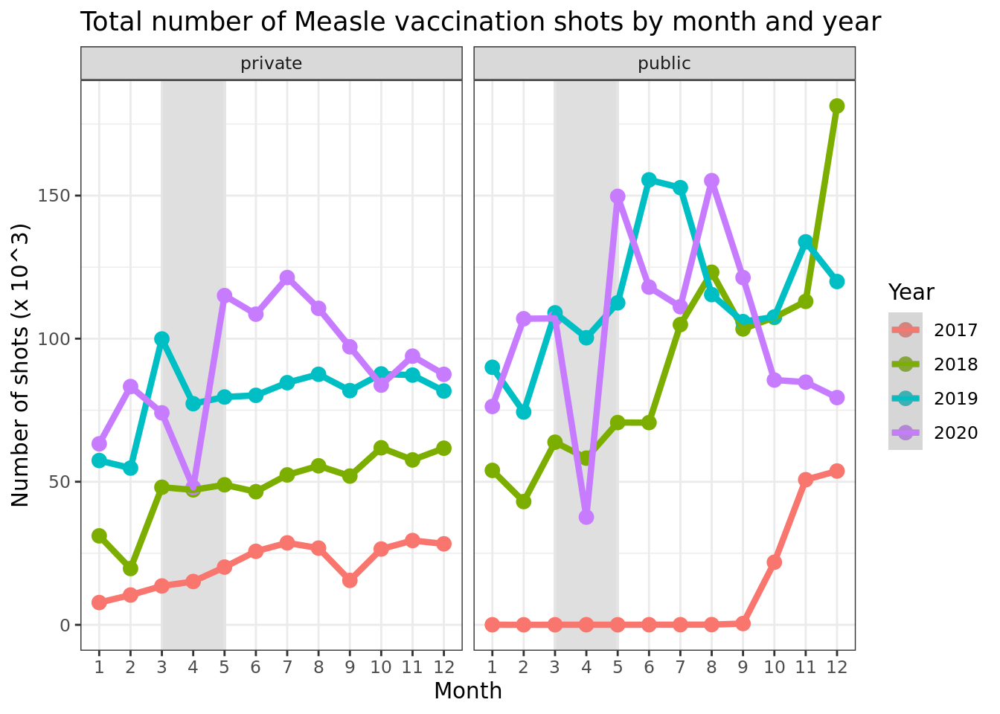
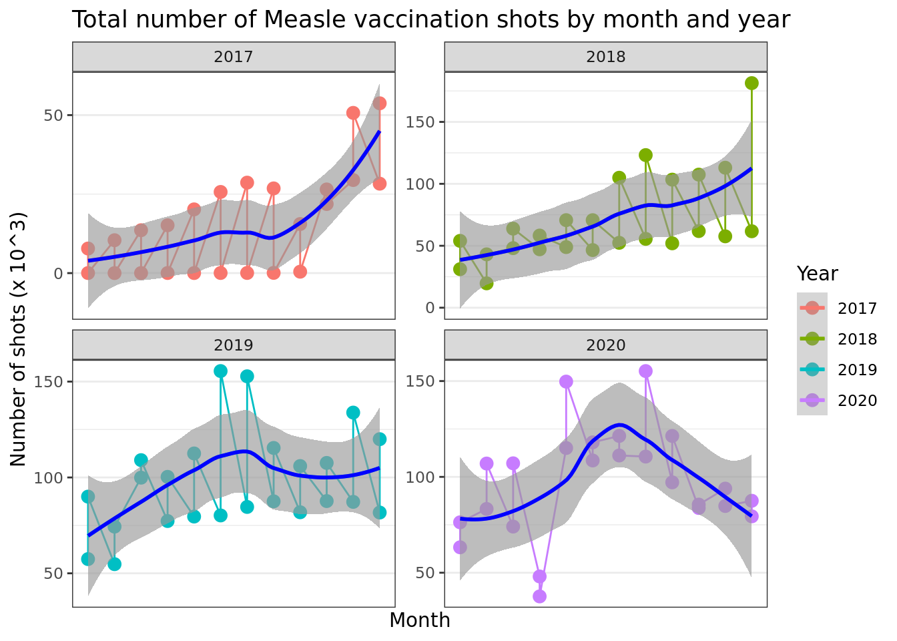
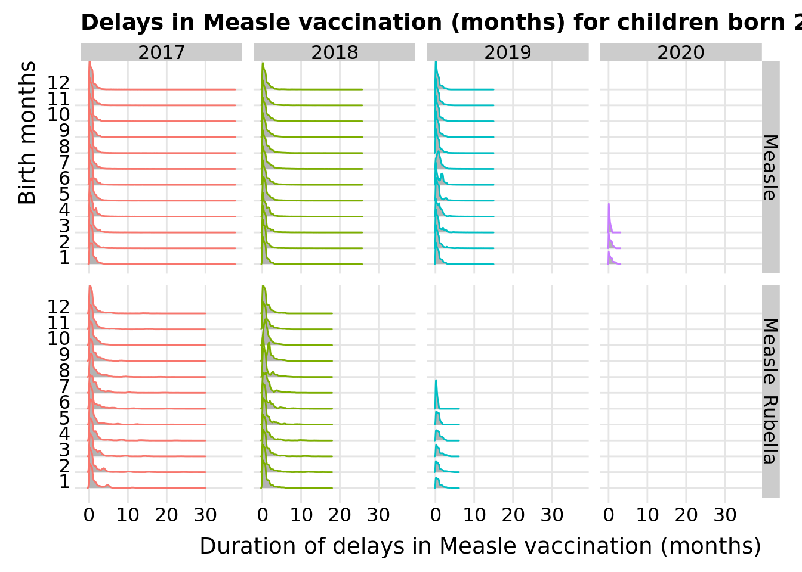
| Variable | N | 0, N = 221,3831 | 1, N = 3,755,7401 |
|---|---|---|---|
| age | 3,977,123 | ||
| 1 | 4,031 (2.9%) | 135,117 (97%) | |
| 2 | 40,074 (3.9%) | 983,760 (96%) | |
| 3 | 55,867 (4.2%) | 1,270,547 (96%) | |
| 4 | 121,411 (8.2%) | 1,366,316 (92%) | |
| sex | 3,977,123 | ||
| F | 116,129 (5.6%) | 1,965,019 (94%) | |
| M | 105,254 (5.6%) | 1,790,721 (94%) | |
| province | 3,977,123 | ||
| An Giang | 102 (9.1%) | 1,024 (91%) | |
| Ba Ria - Vung Tau | 298 (5.3%) | 5,298 (95%) | |
| Bac Giang | 5,334 (2.8%) | 188,308 (97%) | |
| Bac Kan | 726 (2.4%) | 29,047 (98%) | |
| Bac Lieu | 68 (13%) | 468 (87%) | |
| Bac Ninh | 15,664 (12%) | 112,554 (88%) | |
| Ben Tre | 214 (8.1%) | 2,420 (92%) | |
| Binh Dinh | 141 (4.3%) | 3,101 (96%) | |
| Binh Duong | 1,587 (7.1%) | 20,732 (93%) | |
| Binh Phuoc | 235 (7.3%) | 2,964 (93%) | |
| Binh Thuan | 134 (5.3%) | 2,399 (95%) | |
| Ca Mau | 33 (5.9%) | 522 (94%) | |
| Can Tho | 150 (4.9%) | 2,933 (95%) | |
| Cao Bang | 2,951 (6.4%) | 43,055 (94%) | |
| Da Nang | 761 (8.4%) | 8,333 (92%) | |
| Dak Lak | 143 (6.8%) | 1,971 (93%) | |
| Dak Nong | 33 (9.6%) | 312 (90%) | |
| Dien Bien | 5,420 (7.9%) | 63,539 (92%) | |
| Dong Nai | 1,726 (7.0%) | 22,945 (93%) | |
| Dong Thap | 117 (8.2%) | 1,304 (92%) | |
| Gia Lai | 85 (10%) | 738 (90%) | |
| Ha Giang | 7,353 (8.5%) | 78,683 (91%) | |
| Ha Nam | 1,888 (2.5%) | 72,725 (97%) | |
| Ha Noi | 50,226 (9.8%) | 463,940 (90%) | |
| Ha Tinh | 4,951 (4.1%) | 115,953 (96%) | |
| Hai Duong | 4,596 (2.8%) | 159,677 (97%) | |
| Hai Phong | 5,302 (3.6%) | 142,143 (96%) | |
| Hau Giang | 70 (6.7%) | 982 (93%) | |
| Hoa Binh | 2,792 (3.7%) | 72,744 (96%) | |
| Hung Yen | 6,916 (6.4%) | 101,005 (94%) | |
| Khanh Hoa | 211 (6.7%) | 2,958 (93%) | |
| Kien Giang | 185 (8.6%) | 1,969 (91%) | |
| Kon Tum | 23 (6.1%) | 355 (94%) | |
| Lai Chau | 3,682 (7.2%) | 47,595 (93%) | |
| Lam Dong | 141 (9.8%) | 1,294 (90%) | |
| Lang Son | 4,400 (6.1%) | 68,172 (94%) | |
| Lao Cai | 2,884 (4.0%) | 69,107 (96%) | |
| Long An | 454 (6.8%) | 6,238 (93%) | |
| Nam Dinh | 3,272 (2.0%) | 161,197 (98%) | |
| Nghe An | 12,584 (4.3%) | 277,293 (96%) | |
| Ninh Binh | 1,788 (1.9%) | 91,547 (98%) | |
| Ninh Thuan | 67 (7.7%) | 808 (92%) | |
| Phu Tho | 3,066 (2.4%) | 126,294 (98%) | |
| Phu Yen | 65 (6.8%) | 890 (93%) | |
| Quang Binh | 55 (7.0%) | 734 (93%) | |
| Quang Nam | 234 (5.8%) | 3,825 (94%) | |
| Quang Ngai | 160 (5.8%) | 2,602 (94%) | |
| Quang Ninh | 8,907 (8.3%) | 97,851 (92%) | |
| Quang Tri | 71 (9.9%) | 645 (90%) | |
| Soc Trang | 138 (8.6%) | 1,459 (91%) | |
| Son La | 13,176 (10%) | 117,792 (90%) | |
| Tay Ninh | 204 (5.7%) | 3,347 (94%) | |
| Thai Binh | 5,576 (3.9%) | 135,738 (96%) | |
| Thai Nguyen | 5,570 (4.8%) | 109,552 (95%) | |
| Thanh Hoa | 11,742 (3.5%) | 327,369 (97%) | |
| Thanh pho Ho Chi Minh | 10,274 (8.4%) | 112,491 (92%) | |
| Thua Thien Hue | 93 (5.3%) | 1,651 (95%) | |
| Tien Giang | 373 (6.9%) | 5,072 (93%) | |
| Tra Vinh | 46 (5.6%) | 776 (94%) | |
| Tuyen Quang | 2,604 (3.7%) | 67,907 (96%) | |
| Vinh Long | 94 (5.4%) | 1,631 (95%) | |
| Vinh Phuc | 4,309 (3.8%) | 110,536 (96%) | |
| Yen Bai | 4,919 (6.0%) | 77,226 (94%) | |
| vacname2 | 3,977,123 | ||
| Measle | 78,917 (3.1%) | 2,465,248 (97%) | |
| Measle_Rubella | 142,466 (9.9%) | 1,290,492 (90%) | |
| shot | 3,977,123 | ||
| 1 | 219,767 (5.6%) | 3,738,026 (94%) | |
| 2 | 1,584 (9.1%) | 15,748 (91%) | |
| 3 | 30 (1.7%) | 1,787 (98%) | |
| 4 | 2 (1.2%) | 162 (99%) | |
| 5 | 0 (0%) | 17 (100%) | |
| 6 | 0 (NA%) | 0 (NA%) | |
| 7 | 0 (NA%) | 0 (NA%) | |
| 8 | 0 (NA%) | 0 (NA%) | |
| 9 | 0 (NA%) | 0 (NA%) | |
| 10 | 0 (NA%) | 0 (NA%) | |
| 11 | 0 (NA%) | 0 (NA%) | |
| 12 | 0 (NA%) | 0 (NA%) | |
| vacdate_f | 3,977,123 | ||
| Before | 188,703 (6.4%) | 2,738,069 (94%) | |
| After | 32,680 (3.1%) | 1,017,671 (97%) | |
| vdelay | 3,977,123 | -0.52 (-2.26, -0.03) | 0.69 (0.30, 1.38) |
| type | 3,977,123 | ||
| both | 25,512 (6.7%) | 357,072 (93%) | |
| public | 168,045 (5.2%) | 3,057,759 (95%) | |
| private | 27,826 (7.5%) | 340,909 (92%) | |
| type2 | 3,977,123 | ||
| private | 28,412 (7.5%) | 348,120 (92%) | |
| public | 192,971 (5.4%) | 3,407,620 (95%) | |
|
1
n (%); Median (IQR)
|
|||
pid province district commune sex dob
Low:effect <NA> <NA> <NA> <NA> <NA> 2017-09-03
Adjust to 104091520170007 Ha Noi Hoang Mai Quang Trung F 2018-05-12
High:effect <NA> <NA> <NA> <NA> <NA> 2019-02-02
Low:prediction 101010120070004 An Giang A Luoi 01 F 2017-01-01
High:prediction 823141220190176 Yen Bai Yen Thuy Yet Kieu M 2020-11-08
Low 101010120070004 An Giang A Luoi 01 F 2017-01-01
High 823141220190176 Yen Bai Yen Thuy Yet Kieu M 2020-12-24
vacname2 start shot vacdate vyear vmonth year month
Low:effect <NA> 9 <NA> 2018-12-13 2018 5 2017 3
Adjust to Measle 9 1 2019-08-28 2019 7 2018 6
High:effect <NA> 18 <NA> 2020-05-18 2020 10 2019 10
Low:prediction Measle 9 1 2017-01-08 2017 1 2017 1
High:prediction Measle_Rubella 18 12 2020-12-30 2020 12 2020 12
Low Measle 9 1 2017-01-02 2017 1 2017 1
High Measle_Rubella 18 12 2021-01-13 2021 12 2020 12
vagem vagem2 vdelay vsche vsyear vsmonth
Low:effect 9 9.626283 0.2320329 2018-10-09 2018 4
Adjust to 12 12.484600 0.6591376 2019-06-18 2019 7
High:effect 18 18.628337 1.3162218 2020-03-15 2020 10
Low:prediction 0 0.000000 -18.0000000 2017-10-01 2017 1
High:prediction 47 47.540041 35.4662525 2021-12-24 2021 12
Low 0 0.000000 -18.0000000 2017-10-01 2017 1
High 47 47.868583 37.4558522 2022-06-04 2022 12
vdelayd type type2 vdelay_outcome age
Low:effect 2018-10-09 17:32:51 <NA> <NA> 0 2
Adjust to 2019-06-18 15:58:17 public public 0 3
High:effect 2020-03-15 15:51:51 <NA> <NA> 1 4
Low:prediction 2017-10-01 17:28:52 both private 0 1
High:prediction 2021-12-25 04:33:58 private public 1 4
Low 2017-10-01 17:21:46 both private 0 1
High 2022-06-04 15:50:00 private public 1 4
vacdate_f
Low:effect <NA>
Adjust to Before
High:effect <NA>
Low:prediction Before
High:prediction After
Low Before
High After
Values:
pid :
[1] 101010120070004 101010120170002 101010120170003 101010120170004
[5] 101010120170005 101010120170006 101010120170007 101010120170008
[9] 101010120170010 101010120170011 101010120170012 101010120170013
[13] 101010120170014 101010120170015 101010120170016 101010120170017
[17] 101010120170018 101010120170019 101010120170020 101010120170022
[21] + 3101665 others
province :
[1] An Giang Ba Ria - Vung Tau Bac Giang
[4] Bac Kan Bac Lieu Bac Ninh
[7] Ben Tre Binh Dinh Binh Duong
[10] Binh Phuoc Binh Thuan Ca Mau
[13] Can Tho Cao Bang Da Nang
[16] Dak Lak Dak Nong Dien Bien
[19] Dong Nai Dong Thap Gia Lai
[22] Ha Giang Ha Nam Ha Noi
[25] Ha Tinh Hai Duong Hai Phong
[28] Hau Giang Hoa Binh Hung Yen
[31] Khanh Hoa Kien Giang Kon Tum
[34] Lai Chau Lam Dong Lang Son
[37] Lao Cai Long An Nam Dinh
[40] Nghe An Ninh Binh Ninh Thuan
[43] Phu Tho Phu Yen Quang Binh
[46] Quang Nam Quang Ngai Quang Ninh
[49] Quang Tri Soc Trang Son La
[52] Tay Ninh Thai Binh Thai Nguyen
[55] Thanh Hoa Thanh pho Ho Chi Minh Thua Thien Hue
[58] Tien Giang Tra Vinh Tuyen Quang
[61] Vinh Long Vinh Phuc Yen Bai
district :
[1] A Luoi An Bien An Duong An Lao An Minh
[6] An Phu An Thi Anh Son Ba Be Ba Che
[11] Ba Dinh Ba Thuoc Ba To Ba Tri Ba Vi
[16] Bac Ai Bac Binh Bac Ha Bac Me Bac Quang
[21] + 685 others
commune :
[1] 01 02 03 04 05
[6] 06 07 08 09 1
[11] 10 11 12 13 14
[16] 15 16 17 18 19
[21] + 6866 others
sex : F M
vacname2 : Measle Measle_Mumps_Rubella Measle_Rubella
start : 9 18
shot : 1 2 3 4 5 6 7 8 9 10 11 12
vyear : 2017 2018 2019 2020 2021
year : 2017 2018 2019 2020
vsyear : 2017 2018 2019 2020 2021 2022
type : both public private
type2 : private public
vdelay_outcome : 0 1
age : 1 2 3 4
vacdate_f : Before After Wald Statistics Response: vdelay_outcome
Factor Chi-Square d.f. P
age 24010.19 1 <.0001
TOTAL 24010.19 1 <.0001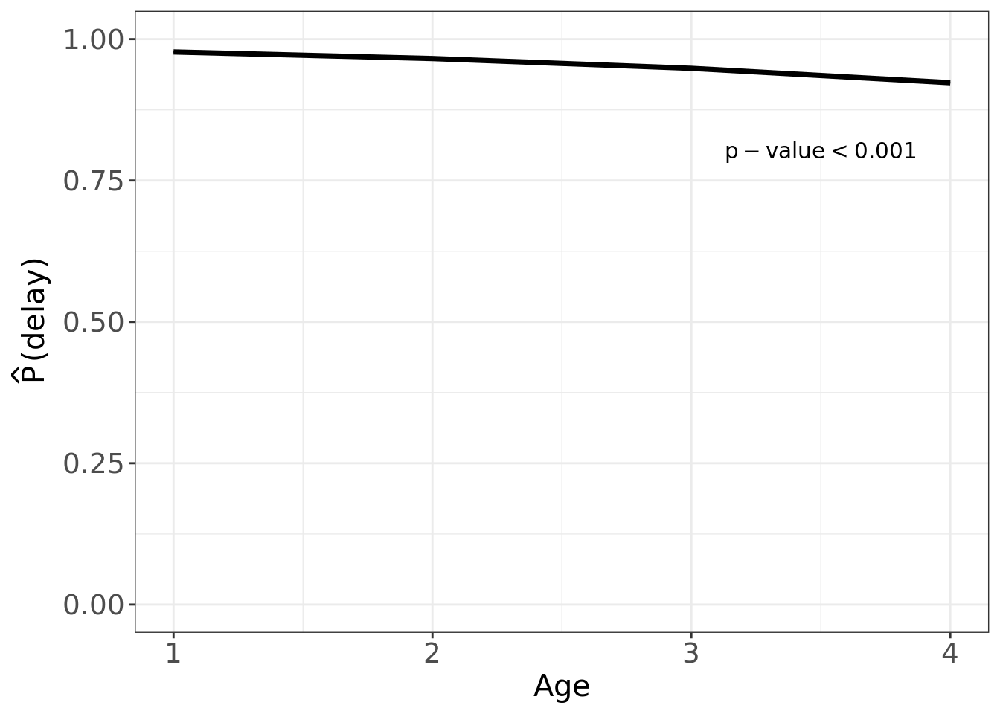
Wald Statistics Response: vdelay_outcome
Factor Chi-Square d.f. P
sex 1.54 1 0.214
TOTAL 1.54 1 0.214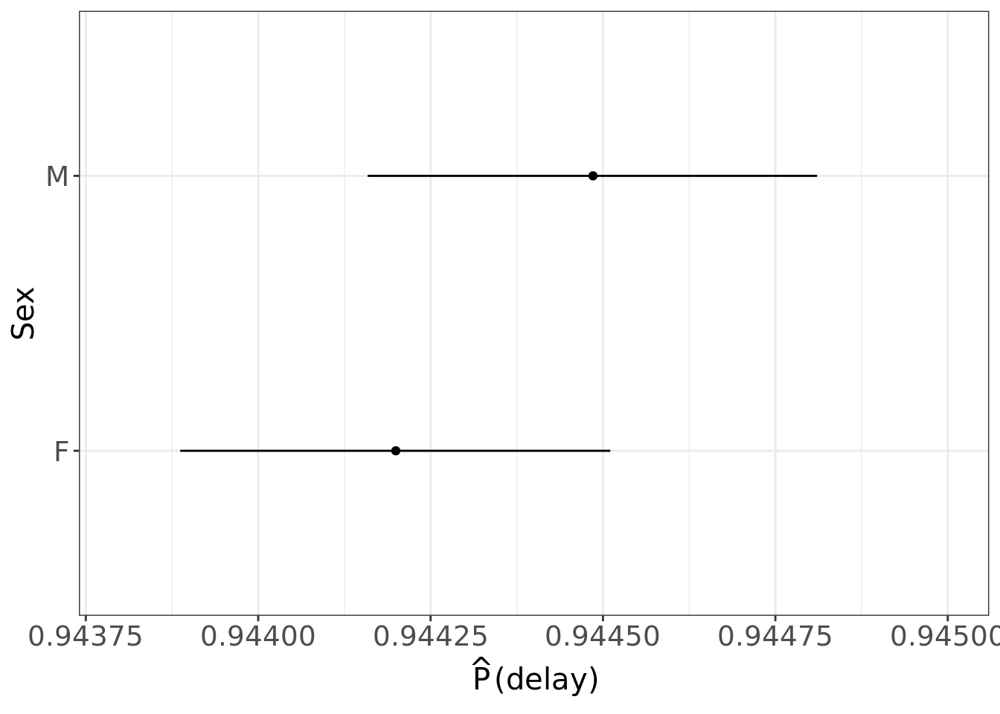
Wald Statistics Response: vdelay_outcome
Factor Chi-Square d.f. P
province 57867.39 62 <.0001
TOTAL 57867.39 62 <.0001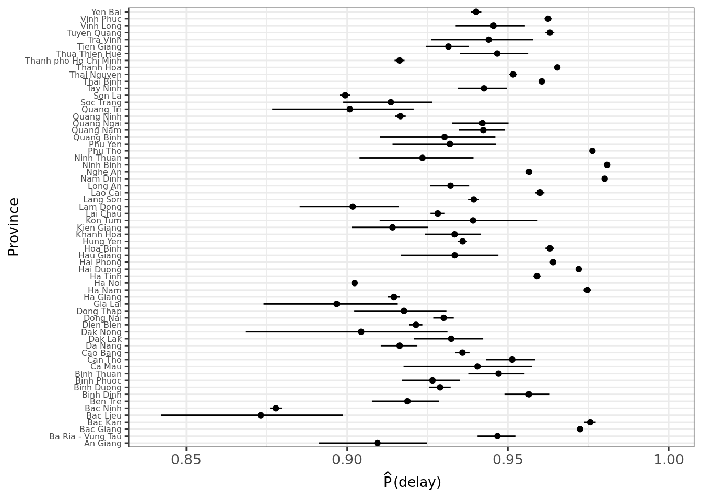
Wald Statistics Response: vdelay_outcome
Factor Chi-Square d.f. P
vacdate_f 15657.64 1 <.0001
TOTAL 15657.64 1 <.0001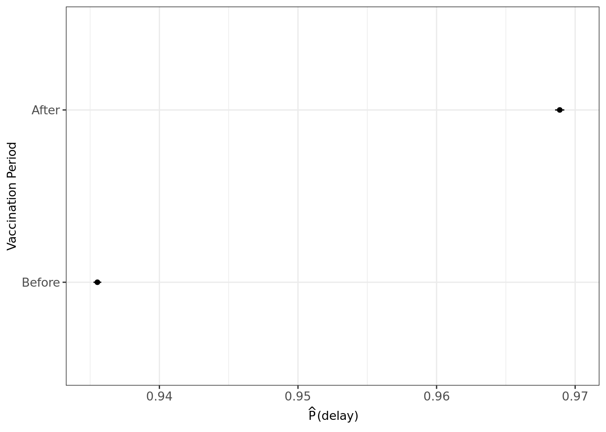
Wald Statistics Response: vdelay_outcome
Factor Chi-Square d.f. P
type 4373.19 2 <.0001
TOTAL 4373.19 2 <.0001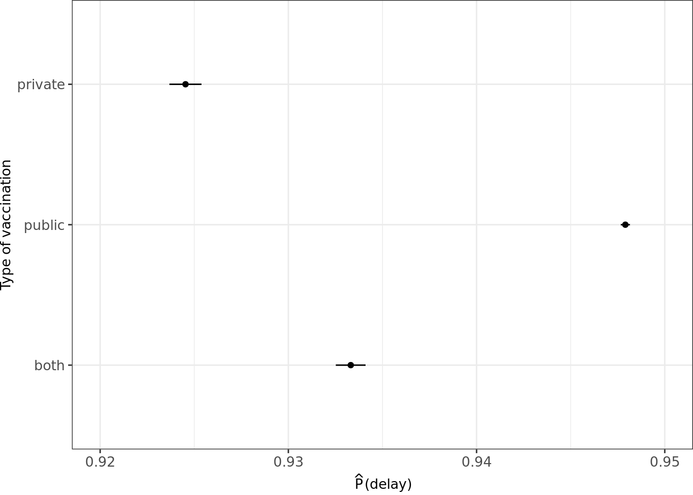
R version 4.0.5 (2021-03-31)
Platform: x86_64-pc-linux-gnu (64-bit)
Running under: Ubuntu 18.04.5 LTS
Matrix products: default
BLAS: /usr/lib/x86_64-linux-gnu/blas/libblas.so.3.7.1
LAPACK: /usr/lib/x86_64-linux-gnu/lapack/liblapack.so.3.7.1
locale:
[1] LC_CTYPE=C.UTF-8 LC_NUMERIC=C LC_TIME=C.UTF-8
[4] LC_COLLATE=C.UTF-8 LC_MONETARY=C.UTF-8 LC_MESSAGES=C.UTF-8
[7] LC_PAPER=C.UTF-8 LC_NAME=C LC_ADDRESS=C
[10] LC_TELEPHONE=C LC_MEASUREMENT=C.UTF-8 LC_IDENTIFICATION=C
attached base packages:
[1] stats graphics grDevices utils datasets methods base
other attached packages:
[1] rms_6.2-0 SparseM_1.81 Hmisc_4.5-0 Formula_1.2-4
[5] survival_3.2-10 lattice_0.20-41 ggridges_0.5.3 gtsummary_1.3.7
[9] gt_0.2.2 lubridate_1.7.10 forcats_0.5.1 stringr_1.4.0
[13] dplyr_1.0.5 purrr_0.3.4 readr_1.4.0 tidyr_1.1.3
[17] tibble_3.1.0 ggplot2_3.3.3 tidyverse_1.3.0 data.table_1.14.0
[21] workflowr_1.6.2
loaded via a namespace (and not attached):
[1] nlme_3.1-152 matrixStats_0.58.0 fs_1.5.0
[4] usethis_2.0.1 RColorBrewer_1.1-2 httr_1.4.2
[7] rprojroot_2.0.2 tools_4.0.5 backports_1.2.1
[10] utf8_1.2.1 R6_2.5.0 rpart_4.1-15
[13] DBI_1.1.1 mgcv_1.8-33 colorspace_2.0-0
[16] nnet_7.3-15 withr_2.4.1 gridExtra_2.3
[19] tidyselect_1.1.0 compiler_4.0.5 git2r_0.28.0
[22] quantreg_5.85 cli_2.4.0 rvest_1.0.0
[25] htmlTable_2.1.0 xml2_1.3.2 sandwich_3.0-0
[28] labeling_0.4.2 sass_0.3.1 scales_1.1.1
[31] checkmate_2.0.0 mvtnorm_1.1-1 polspline_1.1.19
[34] commonmark_1.7 digest_0.6.27 foreign_0.8-81
[37] rmarkdown_2.7 base64enc_0.1-3 jpeg_0.1-8.1
[40] pkgconfig_2.0.3 htmltools_0.5.1.1 dbplyr_2.1.0
[43] highr_0.8 htmlwidgets_1.5.3 rlang_0.4.10
[46] readxl_1.3.1 rstudioapi_0.13 farver_2.1.0
[49] generics_0.1.0 zoo_1.8-9 jsonlite_1.7.2
[52] magrittr_2.0.1 Matrix_1.3-2 Rcpp_1.0.6
[55] munsell_0.5.0 fansi_0.4.2 lifecycle_1.0.0
[58] multcomp_1.4-17 stringi_1.5.3 yaml_2.2.1
[61] MASS_7.3-53.1 plyr_1.8.6 grid_4.0.5
[64] promises_1.2.0.1 crayon_1.4.1 haven_2.3.1
[67] splines_4.0.5 hms_1.0.0 knitr_1.31
[70] pillar_1.5.1 codetools_0.2-18 reprex_2.0.0
[73] glue_1.4.2 evaluate_0.14 latticeExtra_0.6-29
[76] broom.helpers_1.2.1 modelr_0.1.8 vctrs_0.3.7
[79] png_0.1-7 httpuv_1.5.5 MatrixModels_0.5-0
[82] cellranger_1.1.0 gtable_0.3.0 assertthat_0.2.1
[85] xfun_0.22 broom_0.7.6 later_1.1.0.1
[88] conquer_1.0.2 cluster_2.1.1 TH.data_1.0-10
[91] ellipsis_0.3.1